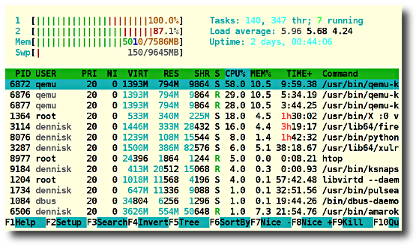

Installing Software Using APT
Table of Contents
1 Assignment Objectives
In this assignment you will find and install the htop process viewer. htop is an improved version of top.
After completing this assignment you will be able to:
- Find a package using
apt-cache. - Obtain additional information on a package.
- Install a package using
apt-get. - Find the version of a package.
- Remove a package.
2 Terms and Commands You Should Know
- APT
- Debian's Advanced Package Tool
- apt-cache
- Query the APT cache
- apt-get
- APT package handling utility – command-line interface
- apt-get update
- Resynchronize the local package index files from their sources.
- apt-get upgrade
- Install the newest versions of all packages currently installed on the system.
- add-apt-repository
- Enable a repository.
- dpkg
- Package manager for Debian
- /etc/apt/sources.list
- List of configured APT data sources
- /var/log/apt/history.log
- Install history log
- Repository
- A collection of software build for a specific Linux distribution.
3 Preparation
You need sudo privileges so do this assignment in the Ubuntu virtual machine.
4 Adding a Repository
Canonical, the company that sponsors Ubuntu does not support all the available software itself. Community supported software is in a separate repository. First you need to add that repo to the /etc/apt/sources.list.
$ cat /etc/apt/sources.lists
The output shows the repositories that are enabled. To fin the program we are looking for we'll add the Universal repository.
$ sudo add-apt-repository universe 'universe' distribution component added for all sources.
Next run apt-get update to refresh the local package database.
5 Finding a Package to Install
A co-worker mentioned that there is a real-time interactive command line process viewer like top but with a nicer interface. However you don't know the name of the package. Use apt-cache to find the correct package.
First update the local package list if not already done.
$ sudo apt-get update
Next use apt-cache to find the package:
$ apt-cache search "process viewer" gnome-system-monitor - Process viewer and system resource monitor for GNOME htop - interactive process viewer
htop looks like what we want. Let's find out more about the package.
$ apt-cache show htop
Description-en: interactive processes viewer Htop is an ncursed-based process viewer similar to top, but it allows one to scroll the list vertically and horizontally to see all processes and their full command lines.
The show option to apt-cache lists a lot more information about the program.
6 Installing htop
You can install htop with apt-get. Installing software on Ubuntu requires sudo privileges.
$ sudo apt-get install htop Reading package lists... Done Building dependency tree Reading state information... Done The following NEW packages will be installed: htop 0 upgraded, 1 newly installed, 0 to remove and 0 not upgraded. Need to get 69.0 kB of archives. After this operation, 188 kB of additional disk space will be used. Get:1 http://us.archive.ubuntu.com/ubuntu/ raring/universe htop amd64 1.0.2-1 [69.0 kB] Fetched 69.0 kB in 0s (84.3 kB/s) Selecting previously unselected package htop. (Reading database ... 251318 files and directories currently installed.) Unpacking htop (from .../htop_1.0.2-1_amd64.deb) ... Processing triggers for bamfdaemon ... Rebuilding /usr/share/applications/bamf-2.index... Processing triggers for desktop-file-utils ... Processing triggers for gnome-menus ... Processing triggers for man-db ... Setting up htop (1.0.2-1) ...
APT installs htop along with any dependencies and installs the manpage as well
Run the new program:
$ htop

To find out more about htop see the manpage.
$ man htop
7 Program Version
Most programs accept the -v option to show the version number.
$ htop -v htop 1.0.2 - (C) 2004-2011 Hisham Muhammad Released under the GNU GPL.
The dpkg command can also be used:
$ dpkg --list htop Desired=Unknown/Install/Remove/Purge/Hold | Status=Not/Inst/Conf-files/Unpacked/halF-conf/Half-inst/trig-aWait/Trig-pend |/ Err?=(none)/Reinst-required (Status,Err: uppercase=bad) ||/ Name Version Architecture Description +++-==================-==============-==============-============================ ii htop 1.0.2-1 amd64 interactive processes viewer
8 Package Archive
The installed Debian archives (deb packages) are stored in the /var directory.
$ ls /var/cache/apt/archives/ | grep htop htop_1.0.2-1_amd64.deb
9 Removing an Installed Package
APT can also remove an installed package:
$ sudo apt-get remove htop Reading package lists... Done Building dependency tree Reading state information... Done The following packages will be REMOVED: htop* 0 upgraded, 0 newly installed, 1 to remove and 0 not upgraded. After this operation, 188 kB disk space will be freed. Do you want to continue [Y/n]?
The remove option will not remove any configuration files. To remove configuration files as well use purge.
$ sudo apt-get purge htop Reading package lists... Done Building dependency tree Reading state information... Done The following packages will be REMOVED: htop* 0 upgraded, 0 newly installed, 1 to remove and 0 not upgraded. Purge htop [1.0.2-1]
10 Install aptitude
Aptitude is not installed by default.
$ apt-cache show aptitude Description-en: terminal-based package manager aptitude is a package manager with a number of useful features, including: a mutt-like syntax for matching packages in a flexible manner, dselect-like persistence of user actions, the ability to retrieve and display the Debian changelog of most packages, and a command-line mode similar to that of apt-get. aptitude is also Y2K-compliant, non-fattening, naturally cleansing, and housebroken.
Here the -s option will simulate the installation:
$ sudo apt-get -s install aptitude Reading package lists... Done Building dependency tree Reading state information... Done The following extra packages will be installed: aptitude-common libboost-iostreams1.49.0 libcwidget3 libept1.4.12 Suggested packages: aptitude-doc-en aptitude-doc tasksel debtags libcwidget-dev The following NEW packages will be installed: aptitude aptitude-common libboost-iostreams1.49.0 libcwidget3 libept1.4.12 0 upgraded, 5 newly installed, 0 to remove and 0 not upgraded. Inst aptitude-common (0.6.8.1-2ubuntu2 Ubuntu:13.04/raring [all]) Inst libboost-iostreams1.49.0 (1.49.0-3.2ubuntu1 Ubuntu:13.04/raring [amd64]) Inst libcwidget3 (0.5.16-3.4ubuntu1 Ubuntu:13.04/raring [amd64]) Inst libept1.4.12 (1.0.9 Ubuntu:13.04/raring [amd64]) Inst aptitude (0.6.8.1-2ubuntu2 Ubuntu:13.04/raring [amd64]) Conf aptitude-common (0.6.8.1-2ubuntu2 Ubuntu:13.04/raring [all]) Conf libboost-iostreams1.49.0 (1.49.0-3.2ubuntu1 Ubuntu:13.04/raring [amd64]) Conf libcwidget3 (0.5.16-3.4ubuntu1 Ubuntu:13.04/raring [amd64]) Conf libept1.4.12 (1.0.9 Ubuntu:13.04/raring [amd64]) Conf aptitude (0.6.8.1-2ubuntu2 Ubuntu:13.04/raring [amd64])
11 Keeping Your System Up to Date
The apt-get update and apt-get upgrade commands are used to keep a Debian system up to date. The apt-get dist-upgrade will upgrade a system to the latest stable release. n*Example:* From Squeeze to Wheezy.
12 What to Submit
Submit a cropped screenshot of the last 10 lines of the history log showing that htop was install than uninstalled.
$ sudo tail /var/log/apt/history.log
13 Resources
- The Debian Administrator's Handbook
- man apt
- man apt-cache
- man apt-get
- man add-apt-repository
- man 5 sources.list